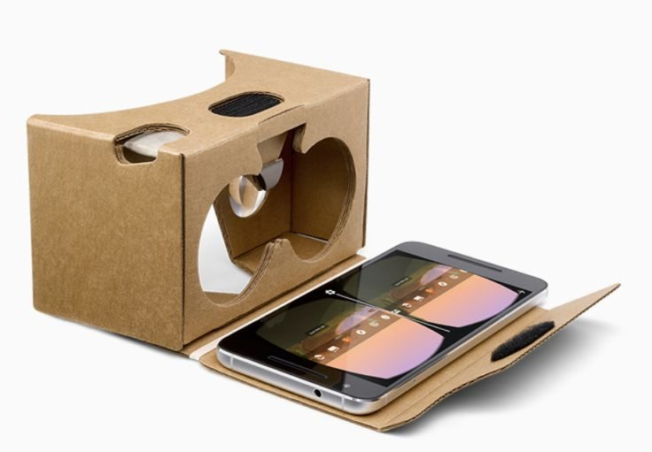

VR para todos
Tecnologia não deve ser privilégio. Toda pessoa com um smartphone comum merece poder explorar mundos virtuais.
O OpenBox VR existe para provar que ninguém precisa gastar milhares de reais para experimentar VR. Com um celular, papelão, lentes baratas e boa vontade, é possível montar o seu próprio headset.
Enciclopédia de headsets: dos primeiros aos mais recentes.
Escolha o Cardboard 1.0 ou 2.0 e monte o seu, passo a passo.
O que é VR, lentes e como jogar jogos de PC no celular.
Tecnologia não deve ser privilégio. Toda pessoa com um smartphone comum merece poder explorar mundos virtuais.
Todos os guias, tutoriais e referências deste site são gratuitos, sem cadastro, sem paywall e sem rastreamento.
Aprender montando é a melhor forma de entender. Cada projeto DIY ensina princípios reais de óptica e computação gráfica.
Reaproveitar papelão, garrafas e peças usadas reduz custo e lixo, mantendo o hobby sustentável.
O princípio é simples: o celular é, ao mesmo tempo, tela, processador e sensor de movimento. A caixa apenas o mantém na posição correta, e as lentes permitem que seus olhos enxerguem a tela de perto sem esforço.
Uma para cada olho, ligeiramente diferentes entre si, criando a sensação de profundidade (estereoscopia).
Sem elas, a tela estaria perto demais para os olhos focarem. As lentes projetam a imagem como se estivesse a alguns metros de distância e preenchem o campo de visão.
Ao girar a cabeça, os sensores do celular informam o app, que atualiza a imagem em tempo real, fazendo você sentir que "está dentro" da cena.
Enciclopédia de headsets de realidade virtual: dos primeiros experimentos aos modelos atuais, com ano, tipo, tela, rastreamento e preço de lançamento.
Aqui você encontra a lista de materiais, os moldes para impressão, a calculadora de medidas e o tutorial completo do autor, do corte do papelão ao encaixe do celular.
Apresentado no Google I/O 2014. É a versão mais simples: indicado para celulares menores, de até 5,7 pol. (cerca de 140 mm). O botão lateral usa ímãs, que o celular detecta pela bússola, então o aparelho precisa ter magnetômetro.
Apresentado no Google I/O 2015. É mais atual: aceita celulares de até 6 pol. (cerca de 150 mm) e troca o ímã por um botão condutivo que toca a tela, funcionando em praticamente qualquer celular. A montagem é bem mais curta (3 passos, contra 12 do modelo anterior).

Imprima sempre em 100% / "tamanho real" (desative "ajustar à página"). Confira a escala medindo o quadrado de teste, quando houver. A lista abaixo é carregada de assets/js/config.js.
Informe as medidas do celular (da ficha técnica do fabricante, sem capinha) e os dados das lentes. A calculadora devolve as dimensões que o seu molde precisa ter. Os valores são estimativas: confirme sempre no teste a seco.
Cálculo por lente fina: d = f·v / (f + v), em que f é a distância focal e v a distância aparente da imagem. O compartimento inclui 2 mm de folga em cada dimensão.
Passo a passo detalhado, elaborado por DhaaankMK. Leia todas as etapas antes de começar e trabalhe sempre em bancada firme e bem iluminada.
Procure o modelo na ficha técnica do fabricante (comprimento × largura × espessura, sem capinha) e digite os valores na calculadora de medidas. Não é preciso pegar o celular. Anote também a posição da câmera e da entrada de carregador/fones: o desenho deve deixar esses pontos livres.
Meça o celular com régua (comprimento × largura × espessura), sem capinha, e digite os valores na calculadora de medidas. Observe onde ficam câmera, carregador e fones, para deixá-los livres.
Imprima o molde em 100%. Meça o quadrado de teste com a régua: se estiver diferente do indicado, a escala está errada. Recorte o molde em papel (com tesoura) para usá-lo como gabarito. Compare o tamanho do compartimento no molde com o resultado da calculadora.
Fixe o gabarito no papelão com fita crepe. Marque os contornos com lápis e perfure os pontos de lente e dobra com um palito para marcá-los. Repare na direção das "ondas" do papelão: dobras ficam mais limpas ao longo das ondas e mais difíceis contra elas.
Dica: para a estrutura principal, posicione as ondas no sentido da altura da caixa, aumentando a rigidez.
Com régua metálica e estilete, faça vários cortes leves (3 a 4 passadas) em vez de um único corte profundo. Isso evita rasgar e dá acabamento mais limpo. Em curvas, use tesoura.
As aberturas das lentes devem ter o diâmetro das lentes menos 1 a 2 mm, para que fiquem presas por pressão. Posicione o centro de cada abertura conforme o valor "Centro de cada lente" da calculadora (metade do seu IPD, de cada lado do centro). O recorte do nariz é em formato de "arco" e permite aproximar o rosto da lente. Faça cortes pequenos e teste frequentemente; é fácil tirar mais, impossível devolver.
Passe o lado cego do estilete (ou uma caneta sem tinta) pela régua, apertando levemente a linha de dobra, sem cortar. Isso "pré-dobra" o papelão. Dobre todas as abas a 90° e relaxe-as, repetindo 2 vezes para amaciá-las.
Antes de colar, encaixe tudo sem cola, usando fita crepe nas junções provisoriamente. Verifique se as faces se alinham, se as lentes ficam centralizadas e se o compartimento tem o tamanho indicado pela calculadora.
Aplique cola branca em camada fina nas abas e prenda com pregadores ou fita crepe por 10–15 minutos, até firmar. Se usar cola quente, trabalhe em pequenos trechos e cuidado com queimaduras. Deixe secar por completo (cerca de 1 hora para cola branca) antes de continuar.
Posicione as lentes com o lado mais curvo (convexo) voltado para o olho, salvo orientação diferente do fabricante. Coloque-as nas aberturas e fixe com anéis de papelão (moldura dupla), que prendem a lente sem cola direta. Nunca coloque cola próxima à superfície da lente: o vapor pode embaçá-la.
Verifique se as lentes estão paralelas à tela e na mesma altura.
O compartimento deve ter as medidas internas da calculadora e deixar o celular firme e centralizado. Cole tiras de papelão guia nas laterais e crie uma aba/trava frontal para segurá-lo. Se o celular ficar solto, adicione tiras de espuma ou EVA.
Sem o celular: use a "faixa de ajuste recomendada" da calculadora. Monte um suporte de tela deslizante cuja posição varie dentro dessa faixa (por exemplo, calços de papelão de 1 mm) e marque a posição inicial correspondente à imagem a 2 m. Se ainda não souber a distância focal real das suas lentes, meça-a conforme o guia Lentes.
Abra um vídeo 360° em modo VR e ajuste a distância entre a lente e a tela. Se a imagem estiver embaçada, aproxime ou afaste o celular em passos de 1–2 mm, dentro da faixa recomendada pela calculadora. Quando a imagem ficar nítida, marque a posição e fixe o compartimento.
Forre as bordas que tocam o rosto com espuma, EVA ou feltro. Pinte ou forre o interior com preto fosco (ou fita preta) para reduzir reflexos. Fixe o velcro/elásticos para a cabeça. Teste a pressão: deve ser firme, mas sem apertar.
Este é o único momento em que o celular é necessário: encaixe-o, abra um vídeo 360° em modo VR e verifique (a) nitidez; (b) imagem centralizada nos dois olhos; (c) ausência de luz entrando pelas laterais; (d) conforto no nariz e na testa. Ajuste o IPD no app, se disponível. Comece com sessões curtas (10 minutos).
Verifique: (a) nitidez; (b) imagem centralizada nos dois olhos; (c) ausência de luz entrando pelas laterais; (d) conforto no nariz e na testa. Ajuste o IPD no app, se disponível. Comece com sessões curtas (10 minutos).
Escolha o assunto:
Realidade Virtual é a técnica de substituir o que seus olhos veem por um ambiente gerado por computador, que reage aos seus movimentos. Três conceitos explicam quase tudo no VR mobile.
O celular possui um giroscópio (mede velocidade de rotação), um acelerômetro (mede aceleração e a direção da gravidade) e frequentemente um magnetômetro (bússola). Combinados ("fusão de sensores"), informam para onde o aparelho está apontando.
"DoF" significa Degrees of Freedom. No 3DoF o sistema detecta apenas rotação: olhar para cima/baixo (pitch), esquerda/direita (yaw) e inclinar a cabeça (roll). Se você caminhar ou se abaixar, o mundo virtual não acompanha. O 6DoF acrescenta a posição (frente/trás, lados, cima/baixo) e exige câmeras ou sensores externos, como em headsets dedicados.
| Recurso | 3DoF (Cardboard) | 6DoF (headsets dedicados) |
|---|---|---|
| Rotação da cabeça | Sim | Sim |
| Movimento no espaço | Não | Sim |
| Controles de mão | Normalmente não (botão, gaze ou joystick Bluetooth) | Sim |
| Custo aproximado | Muito baixo | Médio a alto |
Seus olhos ficam a cerca de 6 cm um do outro e, por isso, veem a mesma cena de ângulos ligeiramente diferentes. O cérebro compara as duas imagens e calcula a profundidade. O app de VR reproduz isso desenhando duas imagens deslocadas, uma para cada olho.
Sem usar o celular: passe o mouse sobre a imagem para girar a "cabeça" virtual. Você também pode focar a imagem e usar as setas do teclado.
Toque em Usar sensores do celular e gire o aparelho em pé (modo retrato). Em redes sem HTTPS, alguns navegadores bloqueiam os sensores.
yaw: 0° | pitch: 0°
Observe que objetos próximos mudam muito mais de posição entre os dois olhos do que objetos distantes: essa diferença é o que o cérebro usa para sentir profundidade.
É o quanto do mundo você enxerga ao mesmo tempo. Lentes de maior diâmetro e melhor posicionamento aumentam o FOV. Cardboards simples ficam geralmente entre 80° e 100°.
Lentes ampliam a imagem, mas deformam as bordas ("almofada"). Os apps aplicam a distorção inversa ("barril") para que, vista pela lente, a imagem pareça reta.
É a distância entre o centro das pupilas, comumente entre 58 mm e 72 mm em adultos. O ideal é que o centro de cada lente coincida com sua pupila. Caso contrário, pode haver desconforto visual.
Ocorre quando o que os olhos veem não combina com o que o ouvido interno sente. Prefira conteúdos com pouca movimentação artificial, faça pausas e interrompa a sessão ao sentir mal-estar.
A lente é a peça que mais influencia a qualidade da experiência. Vale investir um pouco nela, mas existem alternativas caseiras para experimentar sem gastar.
Lentes biconvexas (curvas dos dois lados) são vendidas em lojas de componentes ópticos, marketplaces e kits de Cardboard. Procure por especificações, não por marca.
| Característica | Valor típico | Por que importa |
|---|---|---|
| Distância focal | 34 a 45 mm | Define o tamanho da caixa e o aumento da imagem. |
| Diâmetro | 25 a 37 mm | Maior diâmetro geralmente dá campo de visão maior. |
| Material | Acrílico (PMMA) ou vidro óptico | Acrílico é barato e leve; vidro é mais nítido e resistente a riscos. |
| Revestimento | Sem ou com antirreflexo | Reduz reflexos internos. |
Se a lente não informa a distância focal, é possível medi-la com materiais comuns. O resultado alimenta a calculadora de medidas.
Acenda uma lâmpada (ou observe uma janela com luz difusa, sem sol direto) a pelo menos 5 metros de distância. Quanto mais longe, mais precisa a medida.
Segure a lente entre a lâmpada e uma folha branca. Aproxime e afaste a lente da folha até que a imagem da lâmpada (ou da janela) fique nítida e pequena.
Com uma régua, meça a distância entre a lente e a folha. Esse valor é, aproximadamente, a distância focal (f) da lente.
Faça 3 medições e calcule a média. Informe esse valor na calculadora.
Lupas plásticas de 2x a 5x podem ser desmontadas ou usadas diretamente. A qualidade é variável, mas serve para testes de conceito.
Óculos de "grau positivo" (+2,5 a +4,0) têm lentes convexas. Experimente combinações; a distância à tela deve ser ajustada.
Lentes de projetores antigos, binóculos ou câmeras descartáveis podem ser reaproveitadas com resultados surpreendentes.
A mais criativa das gambiarras. Detalhes a seguir.
Uma "bolha" de água dentro de um plástico transparente forma uma lente convexa. A qualidade óptica é limitada (distorção e aberrações), mas funciona como demonstração educativa.
Garrafa PET transparente e limpa (ou potes plásticos finos e transparentes), tesoura, água limpa, fita adesiva transparente e uma tampa ou anel de papelão.
Corte a região curva do fundo ou do ombro da garrafa, formando uma cúpula transparente com cerca de 4 cm de diâmetro. Escolha um trecho sem riscos ou dobras.
Fixe a cúpula sobre uma base de plástico transparente plano (pedaço de PET liso ou película), selando as bordas com fita para formar um compartimento estanque.
Preencha com água limpa por um pequeno orifício, sem bolhas de ar, e sele-o. A água formará uma lente plano-convexa.
Olhe um texto através dela. Se houver nitidez, posicione-a na caixa. Use um anel de papelão para mantê-la no lugar.
Com o hardware pronto, é hora de conteúdo. Abaixo, categorias de apps essenciais e o caminho para transmitir jogos do PC para o celular.
| Categoria | Exemplos | Observações |
|---|---|---|
| Vídeos 360°/VR | YouTube (modo "Cardboard" nos vídeos 360°/VR) | Ponto de partida mais fácil e gratuito. |
| Demos oficiais | App Google Cardboard e demonstrações do SDK de código aberto | Ótimos para testar calibragem e perfil da lente. |
| Jogos simples | Jogos "VR / Cardboard" nas lojas oficiais | Prefira os que aceitam olhar (gaze) ou controle Bluetooth. |
| Fotos 360° | Galeria do próprio celular e apps de visualização 360° | Tire suas próprias fotos panorâmicas. |
| Configuração | Leitor de QR do perfil da lente (Cardboard) | Ajusta a distorção ao seu headset. |
Dica de ouro: use um controle Bluetooth (gamepad) para jogos. Muitos apps de VR mobile aceitam gamepads comuns.
PCVR é o uso do poder do PC para renderizar o jogo, enquanto o celular apenas exibe a imagem (streaming) e envia os dados de movimento. A ideia geral é:
Renderiza o jogo VR (SteamVR) e gera as imagens estereoscópicas.
Envia o vídeo ao celular e recebe de volta os dados dos sensores.
Exibe as imagens e informa a rotação da cabeça.
Existem soluções criadas pela comunidade e por empresas independentes. Verifique o estado atual de cada uma, pois algumas podem ter sido descontinuadas ou exigir licença paga:
Placa de vídeo dedicada razoável, Windows atualizado, Steam e SteamVR instalados. Quanto mais potente a placa de vídeo, melhor a experiência.
Conecte o PC por cabo Ethernet ao roteador e use Wi-Fi 5 GHz (ou 6 GHz) no celular, no mesmo roteador. Evite redes congestionadas e repetidores.
Baixe apenas do site oficial do projeto escolhido. Evite versões "crackeadas" ou repacotadas, pois podem conter malware.
Siga a documentação da ferramenta e confirme que o SteamVR reconhece o driver. Anote o endereço IP do PC, se o app do celular pedir.
Instale o app apenas pela loja oficial do sistema, informe o IP do PC (ou pareie automaticamente) e confirme que a imagem aparece em dois olhos.
Comece com resolução baixa (720p) e 30–60 FPS. Aumente gradualmente até encontrar o equilíbrio entre qualidade e latência. Teste primeiro com um jogo leve; se houver enjoo, reduza a latência ou a movimentação artificial.